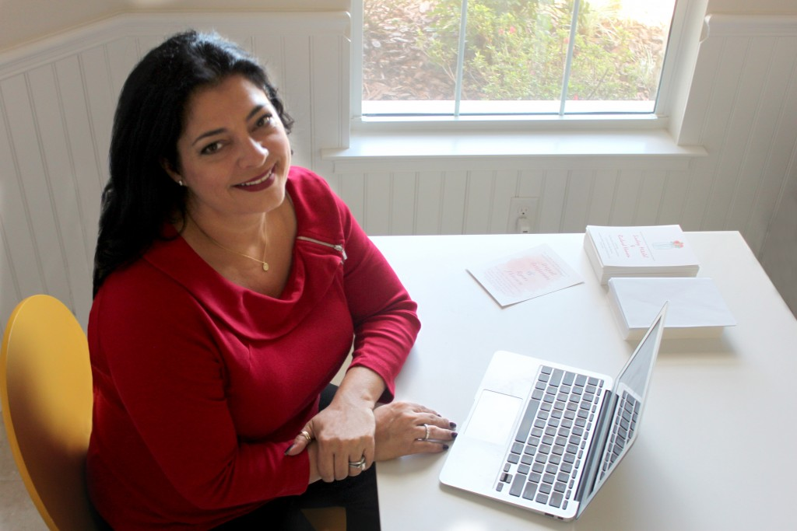

About Me
Hi, my name is Fran Jensen and I am a creative freelance graphic designer based in sunny Florida, U.S.A. I have a minimal, simplistic approach with 'less is more' as a key influence on my style. I am passionately creative, quality driven and motivated to create the best design solution, whether that be a simple logo, branding an entire company, producing cohesive & innovative packaging or laying up a book/magazine, I strive to provide excellence in everything I do. So, go ahead and take a look around and let me know how I can help make your moments matter through design!